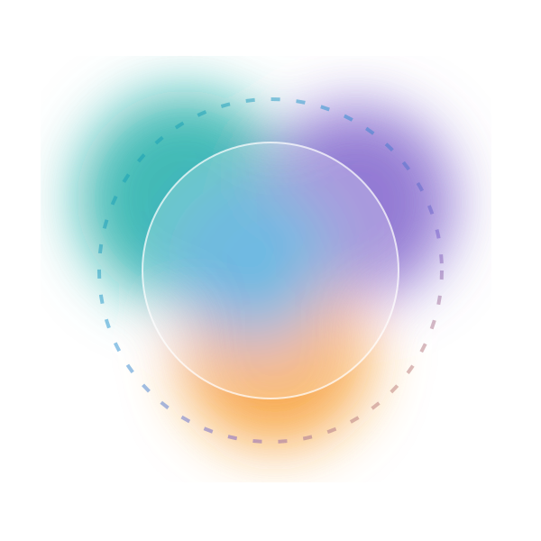

Understand it
Recognise where AI appears and what it can and cannot do.
 ATHAR | أثر
ATHAR | أثر
ATHAR helps children aged 7–12 understand AI, question it, check what matters, protect what is private, and make their own decisions.

A guided AI-readiness journey where children stay in charge.
Choose the view that fits you.
ATHAR develops the human skills children need around AI.
Recognise where AI appears and what it can and cannot do.
Ask clearly, notice weak answers and improve the request.
Confidence is not proof. Important answers deserve evidence.
Protect privacy, create honestly and keep people in control.
Short interactive missions build confidence step by step without turning AI into the authority.
ATHAR is designed around prevention, detection, response, recovery and assurance.
A short discovery mission built for children, not for adults.